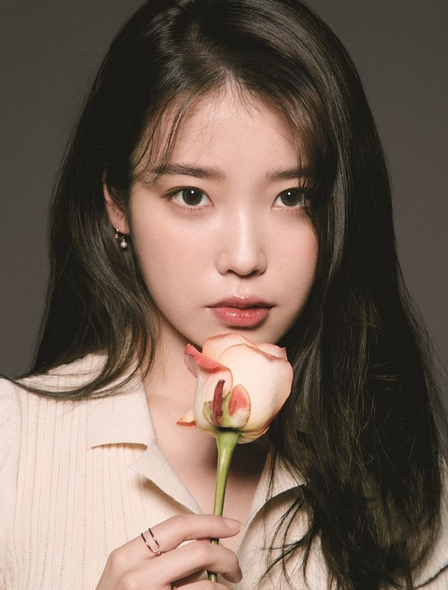

대한민국의 가수 겸 배우이다. 본명은 이지은이며, 예명 아이유(IU)는[38] '음악으로 너와 내가 하나가 된다'라는 뜻을 가지고 있다. 2008년에 데뷔하였다. 국민 여동생이라고도 불렸으며 이제는 국민가수라고 불리운다.
대한민국 가요계에서 독보적인 위치를 점하고 있는 여성 솔로 가수이다. 다양한 장르를 소화해내는 만능형 가수라는 평가를 받는다.[39] 2010년 잔소리와 좋은 날로 부흥한 이후 10년째 가요계 정상의 위치를 굳건히 지키며 롱런하고 있다.
가수 활동 이외에 각종 예능 프로그램 및 광고 모델로도 활발하게 참여하고 있고, 다양한 드라마와 영화에서 연기 활동도 펼치고 있는 멀티 엔터테이너이기도 하다.[40]